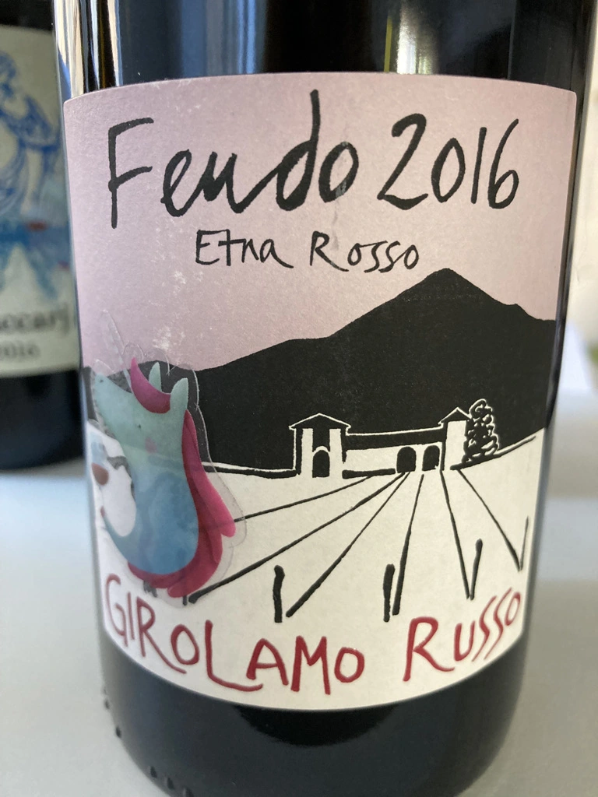

- Type
- Red Still, Dry
- Producer
- Girolamo Russo
- Vintage
- 2016
- Location
- Italy, Etna DOC
- Grapes
- Nerello Mascalese
- Alcohol
- 14.5
- Sugar
- 0.4
- Price
- 1510 UAH
- Cellar
- N/A
Producer
They say that Girolamo Russo was a pianist in the past. Well, maybe he stopped playing music professionally, but I can say that he started to create music in the form of wine.
Etna, Sicily, around 26 ha of vineyards, half is sold, half is turned into wine. 1 white, 1 rosé and 4 red wines.
Ratings
2021-11-02 - 9.00
Wonderful Nerello Mascalese! Beautiful and attractive bouquet of jamon, black dried fruits, dried herbs, balsamic notes, tobacco and underbrush. Still energetic, complex and yet friendly. Delicious beauty that would only improve in few coming years.
Tasted as part of Il Pirata event.